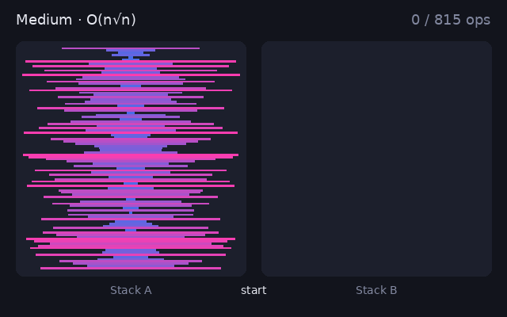
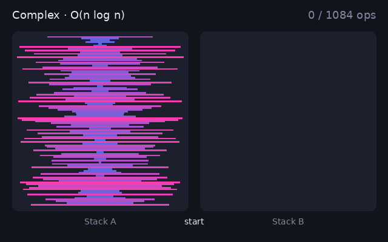
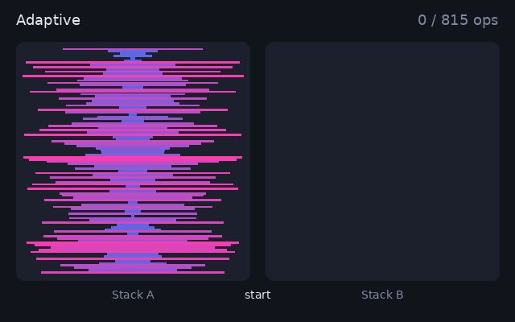

push_swap
Sort a stack of integers using two stacks and only 11 operations, in as few moves as possible. This version implements four strategies with different complexity classes, an adaptive mode that picks one based on how disordered the input is, and a checker.
Stack: C · Algorithms · Custom libft · Make
The challenge
You get an unsorted list in stack A, an empty stack B, and nothing else. No arrays, no sort(). Every move must be one of these operations, printed one per line:
| Op | Effect |
|---|---|
sa sb |
Swap the top two elements of A or B |
ss |
sa and sb at once |
| Op | Effect |
|---|---|
pa |
Move the top of B onto A |
pb |
Move the top of A onto B |
| Op | Effect |
|---|---|
ra rb |
Shift up: the first element becomes the last |
rr |
ra and rb at once |
| Op | Effect |
|---|---|
rra rrb |
Shift down: the last element becomes the first |
rrr |
rra and rrb at once |
Watch it sort
Same 100 random numbers, four strategies. Stack A is on the left, stack B on the right, and bar width shows the value.
The straightforward approach: efficient on small inputs, but the cost grows quickly with size.

Splits the numbers into chunks sized from √n, pushes them to B chunk by chunk, then brings them back in order.

A radix sort that works on each element's position in the sorted order (0 to n-1), not on its raw value.

Measures how disordered the input is and picks the best strategy automatically.
Adaptive mode
The program first computes a disorder index: the proportion of inverted pairs in the input. Then it chooses:
flowchart LR
A["Input"] --> B["Disorder index"]
B --> C["Low · O(n)"]
B --> D["Medium · O(n√n)"]
B --> E["High · O(n log n)"]Nearly sorted input gets a specialized path that only fixes what is out of place, and very disordered input goes to the radix sort.
Design decisions
-
One shared
t_parametersstruct
Both stacks, stats, strategy name and flags travel in a single pointer. That kept every function inside 42's four-parameter limit as the shared state grew.
-
Heap-allocated stack containers
t_node **allocated withmalloc, so operations likepaandracan really change which node is on top from inside functions that only receiveparams. -
Cheapest rotation, in one place
move_to_topalways rotates the shorter way, and every strategy reuses it instead of duplicating that logic. -
Chunk size, tested not guessed
The √n chunk formula was checked by sweeping sizes around it on a 500-number input. The computed value was already the local minimum in operations.
Findings
Things I measured, not just assumed
- Radix cost depends only on
n. Sorted, reversed and random inputs of the same size produced the same operation count, because it works on indexes, not on values. - Reusing the general insertion approach was a mistake for nearly sorted input. It moves every element whatever the order. Looking each target up directly in A and rotating it to the top used far fewer operations when disorder is below 20%.
Benchmark mode
./push_swap --bench $ARG > /dev/null
Prints to stderr the disorder index, the strategy used, its theoretical complexity and a breakdown of every operation performed.
Bonus: the checker
./push_swap --complex $ARG | ./checker $ARG
It applies the operations to the stack and prints OK if A ends up sorted and B empty, KO otherwise, or Error on invalid input.
Build and run
git clone git@github.com:asalazar-z/push_swap.git
cd push_swap
make # push_swap
make bonus # checker
./push_swap --simple 5 4 3 2 1
./push_swap "4 67 3 87 23"
| Flag | Strategy |
|---|---|
(none) / --adaptive |
Chooses automatically by disorder index |
--simple |
O(n²) |
--medium |
O(n√n) |
--complex |
O(n log n) |
--bench |
Adds metrics on stderr |
Invalid input (non-integers, overflow, duplicates) prints Error to stderr.